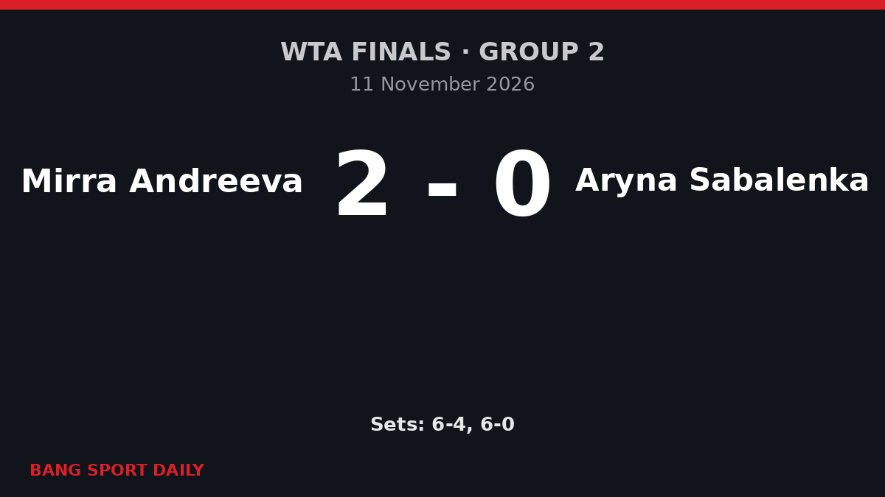

安德烈耶娃连赢11局击败萨巴伦卡 晋级WTA年终总决赛四强
19岁的安德烈耶娃在印第安维尔斯以6比4、6比0获胜，首次参赛便以小组第一出线，成为自2016年库兹涅佐娃之后首位从小组赛突围的俄罗斯球员。

赛事经过
2026年11月11日星期三，在印第安维尔斯进行的WTA年终总决赛中，米拉·安德烈耶娃以6比4、6比0击败阿丽娜·萨巴伦卡，锁定半决赛席位。世界排名第二的萨巴伦卡首盘一度破发，以4比1领先。随后安德烈耶娃连赢11局，第二盘更是在萨巴伦卡的三个发球局全部破发。
这是19岁的安德烈耶娃在第二小组的第二场胜利。她在揭幕战中以同样的6比4、6比0击败斯维托丽娜，至今未失一盘。"我比赢下第一场比赛时还要开心，"安德烈耶娃在赛后场上采访中说。

焦点所在
世界排名第三、法网冠军安德烈耶娃是首次参加年终总决赛。她是自2016年库兹涅佐娃在新加坡之后，首位从小组赛出线的俄罗斯球员，也是自2009年沃兹尼亚奇以来最年轻的年终总决赛四强选手。面对排名比自己高一位的对手，这一比分同样惹人注目：在4比1领先之后，萨巴伦卡在最后55分中只拿到10分。
关键数据与事实
- 比分： 安德烈耶娃 6比4、6比0 萨巴伦卡。
- 连胜： 从首盘1比4落后到比赛结束，连赢11局。
- 第二小组战绩： 两战全胜，未失一盘，先后击败斯维托丽娜和萨巴伦卡。
- 赛制： 八名选手分为两个小组，每组四人，小组前两名晋级半决赛。

下一步
安德烈耶娃已锁定第二小组第一名，周五小组赛最后一轮将对阵已无缘出线的穆霍娃。同一天，萨巴伦卡将与斯维托丽娜争夺该小组另一个半决赛名额；周三，斯维托丽娜以3比6、6比2、6比2逆转击败穆霍娃。半决赛将于周六进行，赛事于11月15日结束。